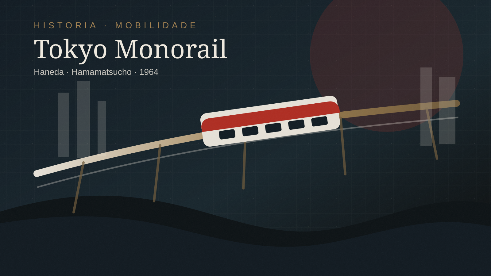

Em 17 de setembro de 1964, o Tokyo Monorail começou a operar entre o Aeroporto de Haneda e Hamamatsucho. A data não foi apenas um marco de transporte. Ela condensou uma imagem que o Japão queria projetar naquele momento: velocidade, engenharia e modernidade urbana.
Faltavam poucas semanas para os Jogos Olímpicos de Tóquio de 1964. A capital se preparava para receber visitantes estrangeiros e mostrar que o país havia reconstruído sua infraestrutura e sua confiança depois da guerra.
Haneda, Hamamatsucho e a porta de entrada
Para quem chegava de avião, o percurso até a cidade era a primeira narrativa visual de Tóquio: canais, áreas industriais, trilhos, edifícios e a sensação de uma metrópole em transformação. Hamamatsucho conectava o passageiro à rede ferroviária urbana.
O contexto olímpico
Os Jogos de 1964 foram vitrine de modernização. O Shinkansen Tokaido tornou-se símbolo maior dessa virada, mas o Tokyo Monorail participou da mesma gramática: transporte como demonstração pública de futuro.
Mais que uma solução técnica
Monotrilhos mudam o ponto de vista. Eles suspendem o passageiro sobre a cidade. Em Tóquio, isso produziu uma chegada quase cinematográfica, entre água, concreto e trilhos.
Memória do Japão moderno
Hoje, olhar para o Tokyo Monorail é também olhar para uma ideia de modernidade. A linha resolveu um problema prático, mas permaneceu como memória urbana: o trem suspenso que anunciava uma cidade disposta a ser lida como futuro.
Fontes consultadas
- Tokyo Monorail: site oficial
- Tokyo Monorail: informações em inglês
- Olympics: Tokyo 1964
- JNTO: Hamamatsucho